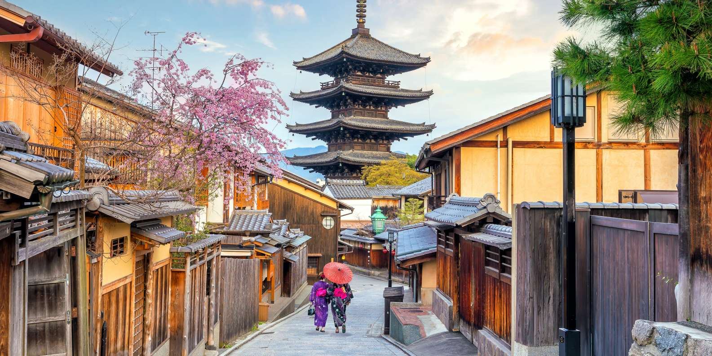

Kyoto
Kyoto est une grande ville de la région du Kansai au sud-ouest du lac Biwa. Ancienne capitale impériale du Japon nommée Heian-kyo, elle regorge de sanctuaires, temples historiques, jardins zen et monuments classés au patrimoine mondial de l'Unesco. On la considère souvent comme la cité japonaise traditionnelle par excellence.
Ancienne capitale impériale du Japon jusqu'à la restauration Meiji de 1868, autrefois nommée Heian-kyo, Kyoto est l'une des villes les plus appréciées des voyageurs au Japon.
De taille pourtant modeste face à certaines des villes proches du Kansai, avec moins d'un million et demi d'habitants sur à peine plus de 800 km², Kyoto séduit en particulier pour son environnement traditionnel, ainsi que par la présence d'innombrables temples, sanctuaires et autres jardins japonais (il y en aurait près de deux mille au total) qui ont façonné son architecture autant que son identité. D'ailleurs, la construction des immeubles ne peut pas dépasser une certaine hauteur pour laisser la vue aux bâtiments traditionnels et aux montagnes environnantes.
Considérée comme la capitale culturelle du Japon, elle héberge de nombreux sites classés au patrimoine mondial de l'Unesco, pour le bonheur des touristes qui sont chaque année plus nombreux à la découvrir. Ils étaient ainsi 87,9 millions en 2019, contre environ 56,84 millions en 2015, toutes nationalités confondues, pour une dépense d'un trillion de Yens (~6,4 milliards d'euros) en hausse de 30% par rapport à l'année précédente.
À l'automne 2020, Kyoto est classée meilleure grande ville du monde par le très respecté magazine Condé Nast Traveler, après 4 ans de suprémacie tokyoïte.